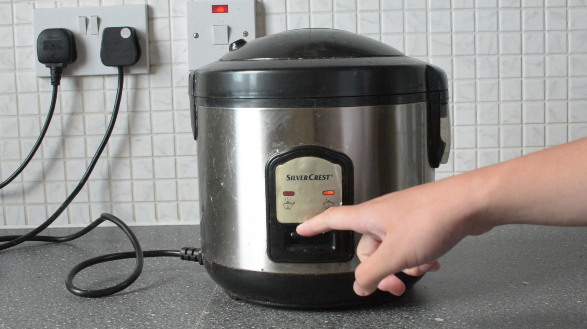

MUD jeans are a European denim company who make jeans for the circular economy. They were the first company I found that made me think differently about products and what it means to own things because they operate a “Lease a Jeans” system, where for a monthly fee you can rent their jeans. After 12 months you can decide if you want to keep renting them or if you want to swap to another pair (or stop renting). They then take the pair and recycle them into new jeans. It was the first time I considered clothes a service not a product.
In my mind, to be sustainable means if you need to buy something you buy high quality and look after it so it lasts. But then you get the problem of also trying to be fashionable at the same time. This method of sustainability doesn’t allow for as much freedom of expression through dress. MUD jeans’ model solves this by allowing users to change their style. As long as MUD keeps up with trends then so can their users, without throwing away anything.
Personally, I like the idea of it. I like that the company offers free repairs which in turn forces them to make better quality items. I like that they recycle the old into the new. But I struggle with the idea of renting jeans and never actually owning them. If the price to rent for a year is the same as the price to buy them outright then I’d much rather buy them and look after them so they last over a year. Which saves me money in the long run.
In the world of fast fashion, consumers buy things knowing they won’t last which is fine because they’re cheap and they can move on to the next fad. I know people who will buy an outfit for the weekend and never wear it again. The renting model would work for these types of consumers but the turnaround time for recycling and recreating new clothes would have to be extremely fast and prices for consumers would rise. Renting works with jeans because they are a wardrobe staple so the trends don’t change so rapidly. But with fashion changing relentlessly I can’t see the renting business model catching on to items that are any less timeless than jeans.
There needs to be a drastic consumer shift in the way we buy things and the reasons we buy them. But at any rate this change would take fashion away from art and more into utility and for this reason I don’t see the industry changing. As we see more companies switch to a more circular model this will only extend as far as it is profitable. Therefore, we shouldn’t rely on companies to fix our spending habits, buying sustainably made clothing is only effective if you need the item, otherwise, you’re still increasing the amount of stuff out there. We need to reduce the pace of fast fashion and the best way is to wear and repair.
Cooking rice is a staple in many Asian households all over the world; the rice cooker elevated this process by making it extremely simple and convenient to make rice. No more monitoring the pot so the rice doesn’t burn or overspill. And an extra space on the stove is handy especially when cooking for several people.
The reason I think rice cookers became so popular is the simplicity of operation. The user has to simply flick a switch. Even if you forget you had rice cooking it will be waiting for you, at perfect temperature. It adds no extra faff or technological learning curve. I can think of so many different kitchen appliances where I’ve had to learn and relearn how to operate specific models. I still get the controls for the rings on my stove wrong. But I’ve never not known how to operate a rice cooker, maybe that’s part of the comfort of owning one.

For a relatively inexpensive kitchen appliance (I think mine cost £15 from Lidl) the rice cooker packs in a lot of great design; and I believe the simpler (and cheaper) the model, the better the design is. The most basic rice cooker has the same components, a lid that allows steam to escape, an inner pot into which the rice and water goes, a heating element and an insulated outer pot. More modern ones include things like vegetable steamers and a host of different buttons and settings to cook different things but a traditional rice cooker only needs two modes, cook and keep warm. The interesting part of the design is how the rice cooker switches between modes. When you press the switch a permanent magnet inside keeps it depressed. The temperature inside starts to rise until it reaches 100°C. At this point the water inside begins to turn to steam which means that the temperature of the pot cannot exceed this boiling point until all of the water has evaporated. This is the principle of latent heat of vaporisation. Once all the water has boiled off the rice is cooked and the temperature of the pot can exceed 100°C. This is important, because remember the permanent magnet has a Curie temperature after which the magnet loses its ferromagnetic properties. Once the magnet stops working the switch can no longer be held down and therefore flicks back into the keep warm mode.

Now all of this could be done easily with a microcontroller and you could add in a bunch of other features while you’re at it but to me there is something nice about using the physical properties of materials, almost like a fail-safe. Water will always boil at 100°C and magnets will always fail at their Curie temperature. There is something so satisfying about it, this is why I think it’s great design.
-C